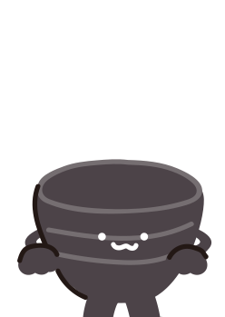

#
1
수장고 초심자에게 알림
#
2
열리다+보이다=개방형 수장고
#
3
수장고 활용법
#
4
수장고 100% 활용하기
#
5
기록=아카이브=민속
#
6
소장품이 우리에게 오기까지
#
7
보존과학은 이렇게
#
8
박물관을 나가며
#
9
수장고 용어 알아보기
수장고
용어 알아보기
#
9

수장고 용어사전
ㄱ
개방형 수장고
수장고는 실물 문화유산과 아카이브 자료를 보관하는 공간입니다. 개방형 수장고는 여기에 전시 기법을 접목한 신개념 수장고라 할 수 있어요.
자료 격납
정해진 공간에 맞춰 소장품을 수납하는 것을 말해요.
구입자료
학술적 가치가 있는 자료를 구입심의평가위원회의 심사를 거쳐 구입한 것이에요.
기증자료
박물관, 개인 및 단체로부터 기증 의뢰가 들어온 자료들을 기증심의평가위원회의 심사를 거쳐 받은 자료들을 말해요.
기탁자료
개인 또는 단체가 박물관에 맡겨서 보관하는 자료를 말해요.
ㅁ
민속
민간에 내려오는 생활문화와 연관된 신앙, 습관, 풍속, 전설, 기술, 전승문화 따위를 통틀어 이르는 말이에요.
민속문화
‘민속’과 같은 의미의 말이에요. 민족이나 지역사회가 오랜 세월에 걸쳐 이어온 전통적인 생활 방식과 습관을 말해요. 의식주는 물론 풍습, 예술, 기술 등 삶의 모든 부분을 포함하고 있답니다.
민속아카이브
다양한 민속 관련 국내·외 자료로, 국립민속박물관이 직접 수집한 사진, 영상 자료, 음원, 출판물 등으로 구성됩니다.
ㅂ
보이는 수장고
수장고 외부에서 유리창을 통해 내부를 볼 수 있는 수장고입니다. 온·습도에 민감한 목재나 금속 소재의 문화유산을 보관하기 때문에 직접 들어가 볼 수는 없어요.
보존과학
문화유산의 보존과 복원을 담당하는 박물관의 중요 업무 분야예요. 문화유산이 더 이상 손상이 진행되지 않도록 조치하고 손상된 부분을 수리·복원하거나 전시, 연구를 위한 복제를 하기도 한답니다.
보존분석
문화유산의 재질이나 보존처리에 필요한 재질을 분석하는 일이에요.
보존처리
문화유산 본래의 형태를 훼손하지 않고, 역사적 증거로 잘 보관될 수 있도록 처치하는 일을 말해요.
ㅅ
소장품
박물관이 소장하고 있는 자료를 보통 ‘소장품,’ ‘소장 자료,’ ‘유물’이라고 합니다. 공식적으로는 ‘문화유산’이라는 용어를 사용해요.
수장고
박물관에서 소장 중인 문화유산을 보존, 유지, 관리하기 위해 만든 시설로 사전적 의미로는 귀중한 것을 고이 간직하는 창고를 말해요. 소장품 보관에 적절한 온도와 습도가 항시 유지되고, 철통같은 보안을 자랑한답니다.
수장대
서랍장, 격납 선반, 랙, 유리 격납장 등 문화유산을 보관하거나 전시하는 설비를 이야기해요.
ㅇ
아카이브(Archive)
사전적 정의로는 다양한 기록물을 저장하는 공간을 말해요. 요즘에는 공간뿐만 아니라 보관된 수많은 기록 자료도 ‘아카이브’라고 부른답니다.
열린 수장고
수장고 내부에 직접 들어가서 보다 가깝게 소장품을 살펴볼 수 있는 수장고입니다. 본디 수장고는 관람객이 들어갈 수 없지만 소장품의 공개를 확대하고자 만든 신개념 수장고이지요.
예방보존
문화유산의 손상을 예방하고 수명을 연장시키는 일을 말해요.
이관자료
공공기관 혹은 단체로부터 소유 및 관리에 대한 모든 권한을 넘겨받아 소장하게 된 문화유산을 말해요.
ㅈ
자료등록
구입, 기증, 이관, 기탁 등을 통해 수집한 자료를 체계적으로 정리하여 국가 소유의 문화유산으로 등록하는 과정을 의미합니다.